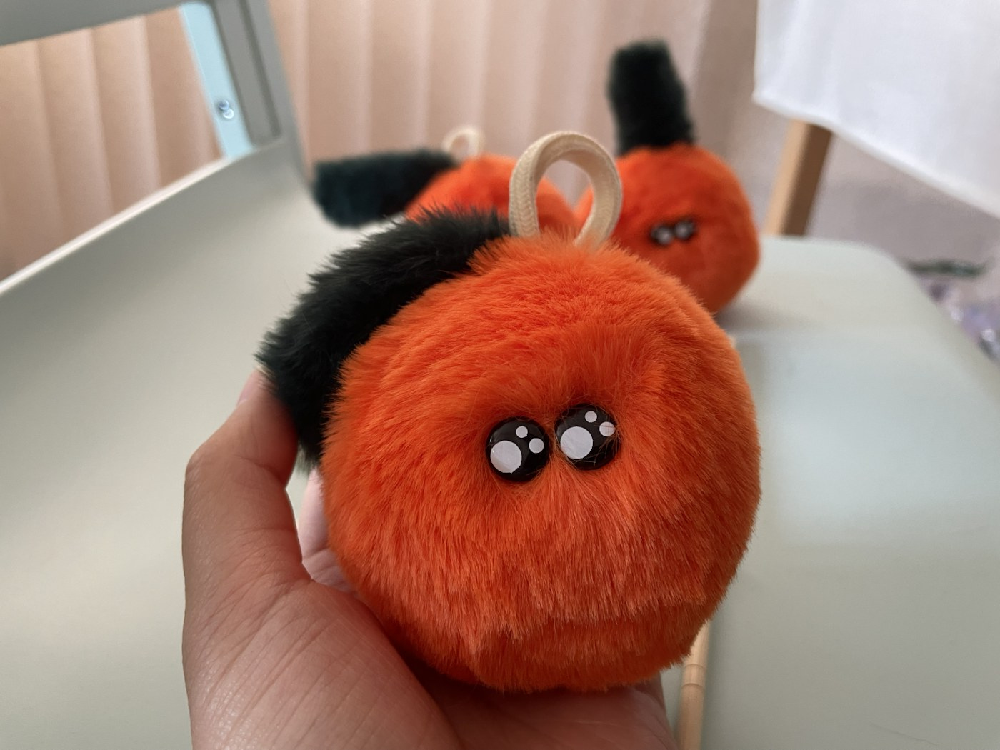
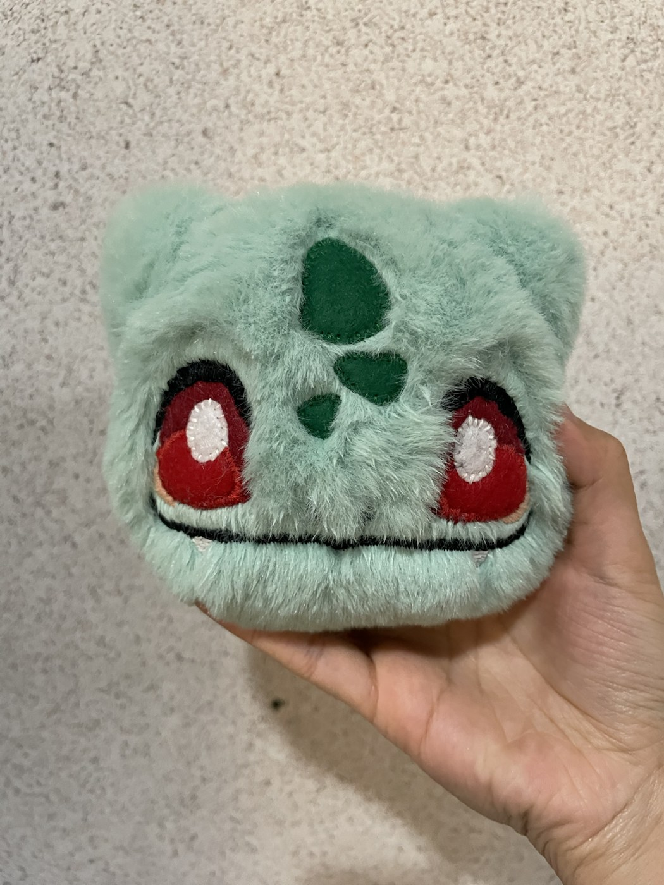
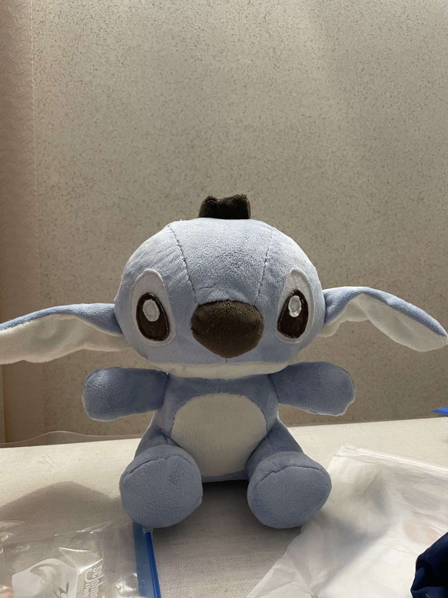
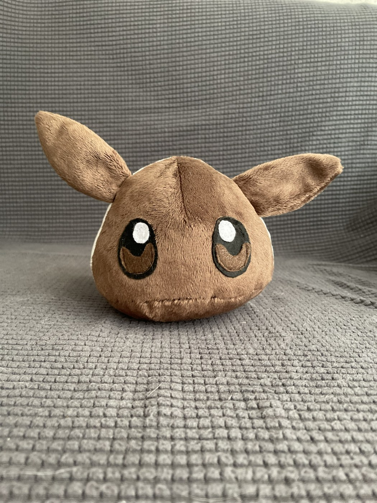
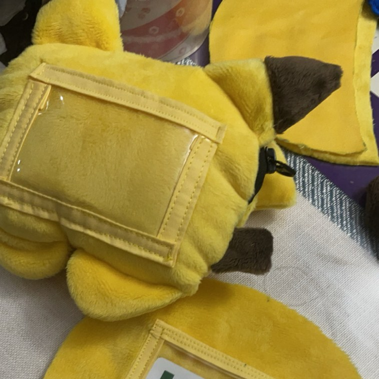
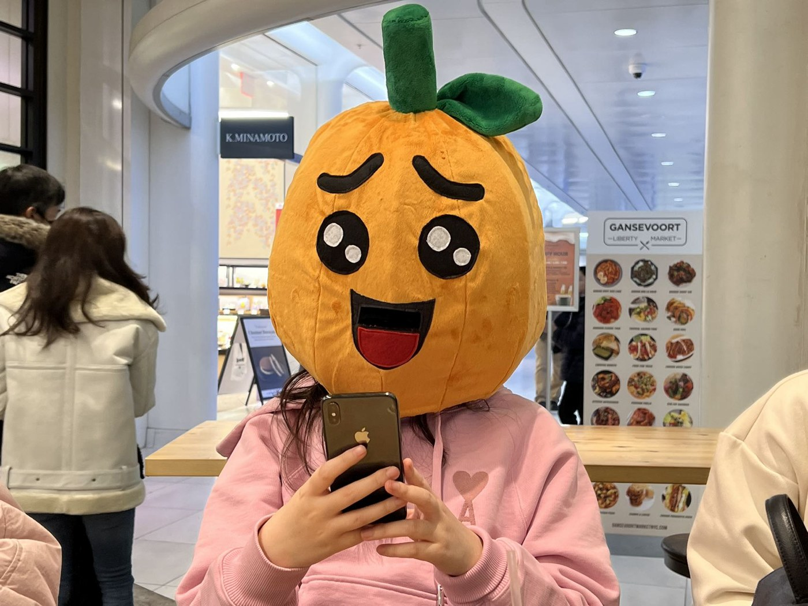

Small plushie keychains made with bright fabric, compact stuffing, and safety eyes. I gifted them to friends.
Sewing Work
A small collection of my plushie projects, with process images from patterning, cutting, sewing, and assembly. Patterns are either from Choly Knight or self-drafted.

Small plushie keychains made with bright fabric, compact stuffing, and safety eyes. I gifted them to friends.

Bulbasaur plushie made with minky and felt, with embroidered face details.

Stitch plushie made with minky and felt.

Eevee plushie made with minky and felt.

Pikachu plushie purse with a clear cardholder and a zippered pocket.

Wearable kumquat plushie built with an internal head support, structured panels, and a minky outer layer.